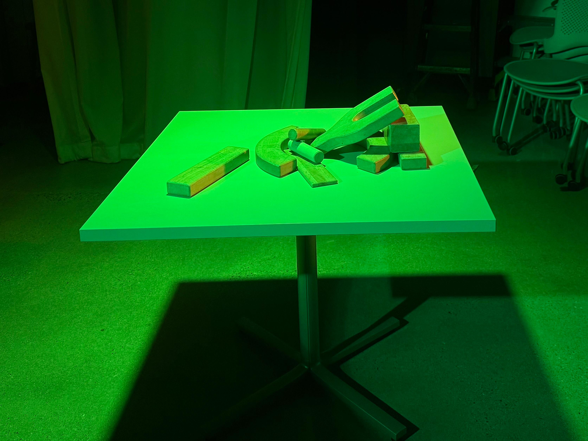
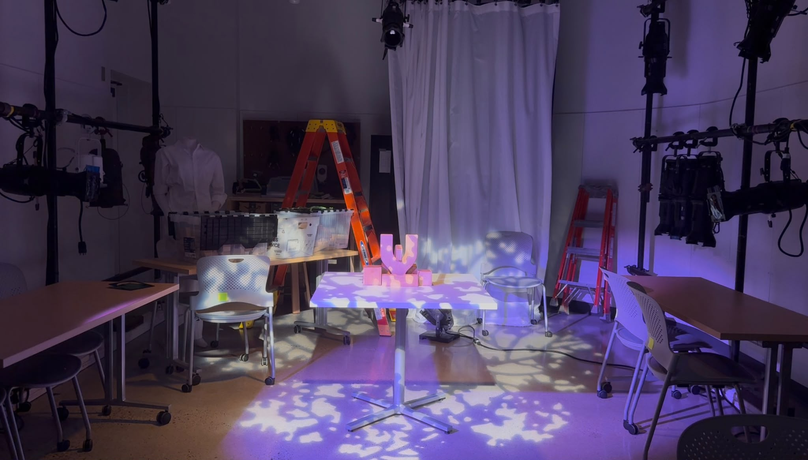

Lighting Design
A collection of lighting projects exploring how color, structure, and movement can communicate emotions and ideas. These projects were created as part of TDM 154: Lighting Design.

Sickly
A lighting installation exploring the emotion "sickly" through a greenish yellow color palette and a broken structure.

Futile Devices
A lighting design inspired by Sufjan Stevens' song "Futile Devices," using slow transitions, soft colors, and an intertwined ring structure.